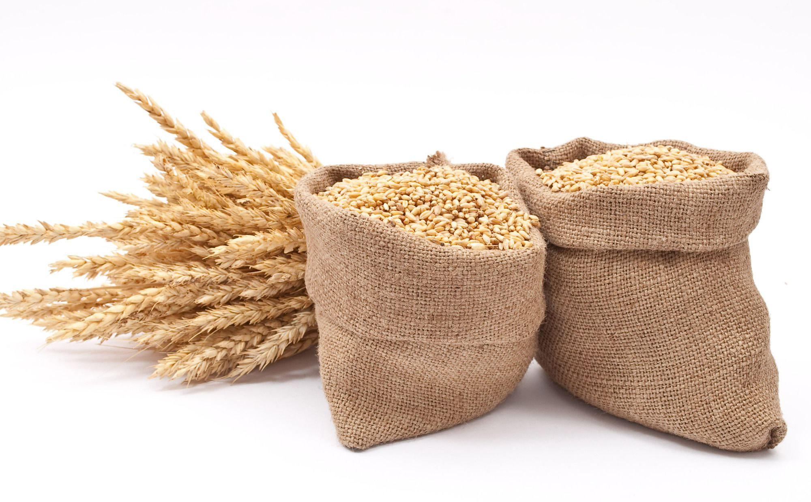

Хлебопекарное оборудование
От подачи муки и замеса до расстойки, выпечки, охлаждения и резки хлеба.

Оборудование раздела

CEPI
Хранение и дозирование муки
Бестарное хранение · Подача и дозирование муки

SANCASSIANO
Тестомесильные машины
Серия Genesi · Безмасляный привод

LOGIUDICE FORNI
Ротационные печи
Модель STREAM · Обшивка 1,2 мм
- Тестомесильные машины
- Тестомесильные машины EFFEDUE
- Тестоделительные машины GLIMEK
- Тестоокруглительные машины BTF
- Камеры предварительной расстойки BTF
- Багетоформующие (тестозакаточные) машины BTF
- Тестораскаточные машины TEKNOSTAMAP
- Машины для производства заквасок (Ферментаторы)
- Камеры окончательной расстойки ATREPAN
- Печи подовые (циклотермические) LOGIUDICE FORNI
- Спиральные охлаждающие транспортеры и камеры спиральной шоковой заморозки MILLENNIUM ENGINEERING
- Машины для резки и упаковки хлеба DOMINO